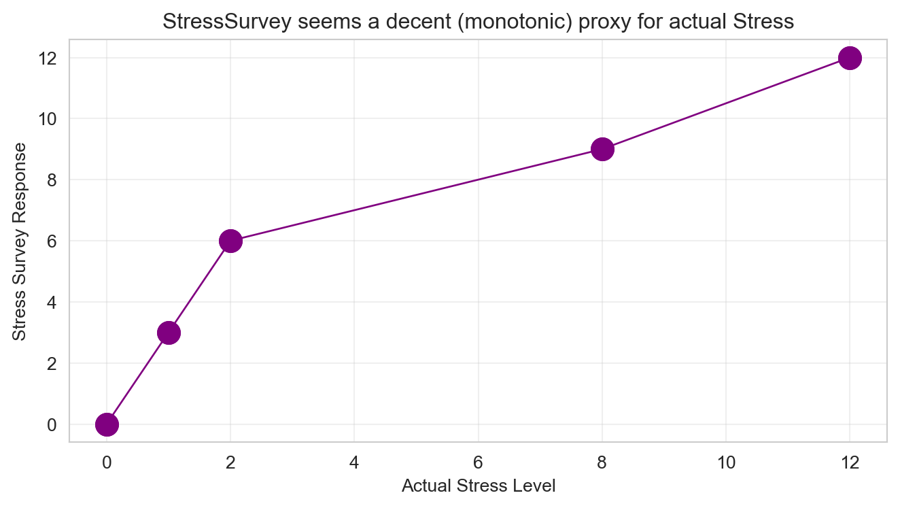
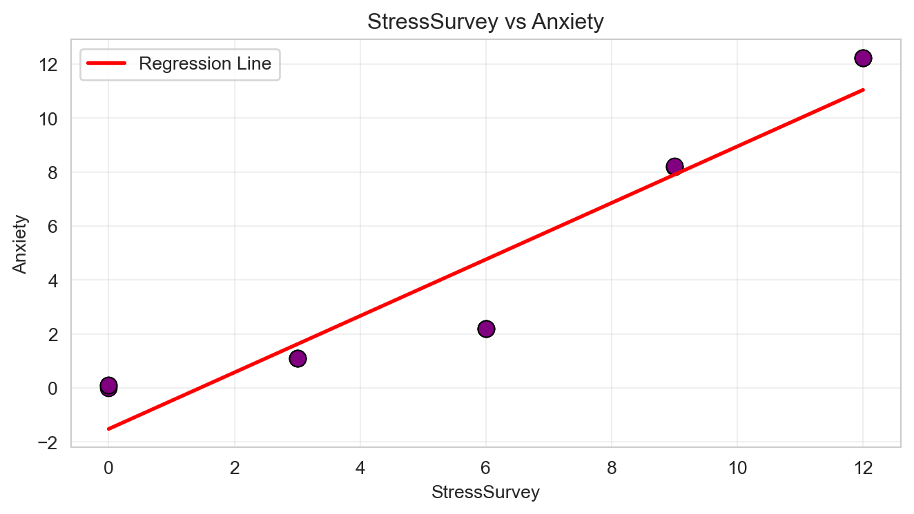
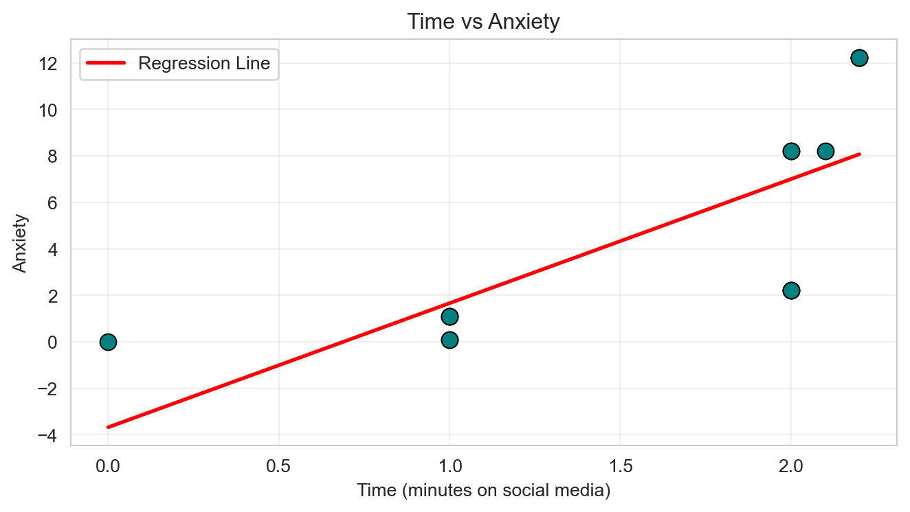

| Stress | StressSurvey | Time | Anxiety | |
|---|---|---|---|---|
| 0 | 0 | 0 | 0.0 | 0.00 |
| 1 | 0 | 0 | 1.0 | 0.10 |
| 2 | 0 | 0 | 1.0 | 0.10 |
| 3 | 1 | 3 | 1.0 | 1.10 |
| 4 | 1 | 3 | 1.0 | 1.10 |
| 5 | 1 | 3 | 1.0 | 1.10 |
| 6 | 2 | 6 | 2.0 | 2.20 |
| 7 | 2 | 6 | 2.0 | 2.20 |
| 8 | 2 | 6 | 2.0 | 2.20 |
| 9 | 8 | 9 | 2.0 | 8.20 |
| 10 | 8 | 9 | 2.0 | 8.20 |
| 11 | 8 | 9 | 2.1 | 8.21 |
| 12 | 12 | 12 | 2.2 | 12.22 |
| 13 | 12 | 12 | 2.2 | 12.22 |
| 14 | 12 | 12 | 2.2 | 12.22 |
Regression & Interpretability Challenge
Don’t Trust Linear Models - The Perils of Non-Linearity
Introduction
This analysis examines how linear regression can produce misleading results when underlying relationships are non-linear. Using a dataset with a known true relationship, I evaluate how different model specifications affect interpretation, particularly when using proxy variables and “controlling for” additional factors.
The True Relationship
We define three variables:
\[ \begin{aligned} A &\equiv \textrm{Anxiety Level measured by fMRI activity}\\ S &\equiv \textrm{Stress Level measured by cortisol level in blood}\\ T &\equiv \textrm{\# of minutes on social media in last 24 hours} \end{aligned} \]
We know the true relationship among these variables:
\[ Anxiety = Stress + 0.1 \times Time \]
This equation implies specific values in the multiple regression framework \(Anxiety = \beta_0 + \beta_1 \times Stress + \beta_2 \times Time + \epsilon\):
- \(\beta_0 = 0\) (intercept is zero)
- \(\beta_1 = 1\) (coefficient on Stress is 1)
- \(\beta_2 = 0.1\) (coefficient on Time is 0.1)
The Data
The dataset is constructed such that the true relationship holds exactly for every observation.

Analysis Tasks
- Bivariate Regression: Anxiety on StressSurvey. Run a bivariate regression of Anxiety on StressSurvey. What are the estimated coefficients? How do they compare to the true relationship?
-1.524000000000001 1.0470000000000002The estimated intercept (-1.524) and slope (1.047) suggest a strong positive relationship. However, these estimates deviate meaningfully from the true data-generating process, indicating model misspecification. Using StressSurvey as a proxy and omitting Time leads to bias, as the coefficient absorbs effects from both non-linearity and the missing variable.
The negative intercept further indicates misspecification. Despite appearing strong, this regression provides a misleading interpretation of the true relationship. This demonstrates that even a strong statistical relationship can be misleading when the underlying variable is a non-linear proxy.
- Visualization: StressSurvey vs Anxiety. Create a scatter plot with the regression line showing the relationship between StressSurvey and Anxiety. Comment on the fit and any potential issues.

The scatter plot shows a clear upward trend between StressSurvey and Anxiety, and the regression line fits the data closely. At first glance, this suggests a strong positive relationship.
However, closer inspection reveals non-linear distortions, especially at lower and higher stress levels, where the line either under- or over-predicts Anxiety. This occurs because StressSurvey is only a monotonic but non-linear proxy for true stress, and the model omits Time, which also influences Anxiety.
Thus, despite the high apparent fit, the regression line is misleading: it gives a false sense of a precise linear relationship while ignoring the true underlying causes.
- Bivariate Regression: Anxiety on Time. Run a bivariate regression of Anxiety on Time. What are the estimated coefficients? How do they compare to the true relationship?
(np.float64(-3.6801357186921675), np.float64(5.340592227020359))The regression of Anxiety on Time yields an intercept of -3.68 and a coefficient of 5.34. While it suggests a strong positive relationship, these estimates do not reflect the true model, where the coefficient on Time is only 0.1 and the intercept is zero.
By omitting Stress, the regression inflates the apparent effect of Time, absorbing variation actually caused by stress. The negative intercept further highlights model misspecification. Thus, this bivariate model gives a misleading picture of social media’s impact on anxiety. Because Time is correlated with Stress, the model incorrectly attributes Stress-driven variation in Anxiety to Time, leading to a severely inflated coefficient.
- Visualization: Time vs Anxiety. Create a scatter plot with the regression line showing the relationship between Time and Anxiety. Comment on the fit and any potential issues.

The scatter plot shows a clear misfit between the regression line and the data points:
Many points are far from the regression line, particularly at higher Anxiety values. This occurs because Time alone does not fully explain Anxiety; Stress is the primary driver. The slope is inflated and the intercept is strongly negative, both indicating that the bivariate model is misleading. Even though the line gives a trend, it fails to capture the true relationship:
\[ Anxiety = Stress + 0.1 \times Time \]
Key insight: This visualization demonstrates the danger of ignoring relevant control variables — a seemingly strong linear relationship can give completely wrong conclusions when non-linearity or omitted variables are present.
- Multiple Regression: StressSurvey + Time. Run a multiple regression of Anxiety on both StressSurvey and Time. What are the estimated coefficients? How do they compare to the true coefficients?
const 0.588758
StressSurvey 1.426926
Time -2.779944
dtype: float64The multiple regression produces an intercept of ~0.59, a StressSurvey coefficient of ~1.43, and a Time coefficient of ~-2.78.
Although the model appears statistically strong, the results are misleading: StressSurvey overstates the effect of stress, and Time shows a negative effect despite the true relationship being a small positive (0.1). This distortion occurs because StressSurvey is a non-linear proxy for actual stress, causing the regression to misattribute variation between Stress and Time.
Even “controlling for” Time cannot fix the bias introduced by an imperfect proxy, highlighting the danger of blindly trusting regression coefficients. The negative coefficient on Time is especially problematic because it reverses the true positive relationship, demonstrating how a flawed control variable can lead to completely incorrect conclusions.
- Multiple Regression: Stress + Time. Run a multiple regression of Anxiety on both Stress and Time. What are the estimated coefficients? How do they compare to the true relationship?
const 1.110223e-16
Stress 1.000000e+00
Time 1.000000e-01
dtype: float64The multiple regression using Stress and Time produces coefficients that match the true relationship almost exactly:
Intercept ≈ 0 Stress = 1 Time = 0.1
Using the true Stress variable eliminates bias and accurately recovers the underlying data-generating process.
Key Insight:
“Using the true Stress variable eliminates bias and accurately recovers the underlying data-generating process. In contrast, the StressSurvey model distorts both the magnitude and direction of effects.”
- Model Comparison. Compare the R-squared values and coefficient interpretations between the two multiple regression models (Questions 5 and 6). Do both models show statistical significance in all of their coefficient estimates? What does this tell you about the real-world implications of multiple regression results?
Comparing the two multiple regression models:
Both models produce high R² and statistically significant coefficients. However, only the model using Stress recovers the true relationship, while the StressSurvey model produces misleading estimates.
This highlights that statistical significance does not imply correct model specification or causal validity.
- Real-World Implications. For each of the two multiple regression models, assume their outputs were published in academic journals and then picked up by the popular press. What headline about time spent on social media and its effect on anxiety would you expect from a press outlet covering the first model? What headline for the second model? Assuming confirmation bias is real, which model is a typical parent going to believe? Which model will Facebook, Instagram, and TikTok executives prefer?
Parents concerned about the negative effects of social media are more likely to believe Model 6, as it aligns with their prior beliefs that increased usage raises anxiety.
In contrast, social media companies would prefer Model 5, since it suggests that increased usage reduces anxiety, supporting a more favorable narrative.
This illustrates how confirmation bias shapes which results are accepted, regardless of model validity.
- Avoiding Misleading Statistical Significance. Reflect on this tip: split the sample into meaningful subsets (“statistical regimes”) and use graphical diagnostics for linearity rather than blind reliance on “canned” regressions. Apply this approach to the multiple regression of Anxiety on both StressSurvey and Time by analyzing a smartly chosen subset of the data. What specific subset did you choose and why? Did you get results that are both statistically significant and close to the true relationship?
OLS Regression Results
==============================================================================
Dep. Variable: Anxiety R-squared: 1.000
Model: OLS Adj. R-squared: 1.000
Method: Least Squares F-statistic: 3.760e+28
Date: Fri, 10 Apr 2026 Prob (F-statistic): 2.52e-43
Time: 13:16:03 Log-Likelihood: 183.48
No. Observations: 6 AIC: -361.0
Df Residuals: 3 BIC: -361.6
Df Model: 2
Covariance Type: nonrobust
================================================================================
coef std err t P>|t| [0.025 0.975]
--------------------------------------------------------------------------------
const -4.0000 3.41e-13 -1.17e+13 0.000 -4.000 -4.000
StressSurvey 1.3333 1.31e-14 1.01e+14 0.000 1.333 1.333
Time 0.1000 2.2e-13 4.55e+11 0.000 0.100 0.100
==============================================================================
Omnibus: nan Durbin-Watson: 0.029
Prob(Omnibus): nan Jarque-Bera (JB): 1.062
Skew: 0.707 Prob(JB): 0.588
Kurtosis: 1.500 Cond. No. 600.
==============================================================================
Notes:
[1] Standard Errors assume that the covariance matrix of the errors is correctly specified.To address the distortion caused by non-linearity, I focus on a high-stress subset where StressSurvey ≥ 9. In this region, the proxy behaves more linearly relative to actual Stress, reducing the mismatch between the measured and true variable.
I then run the same multiple regression (Anxiety on StressSurvey and Time) within this subset. The estimated coefficient on Time becomes positive and moves closer to the true value of 0.1, while the overall interpretation becomes more consistent with the true data-generating process.
This improvement occurs because restricting the sample reduces non-linear distortions in the proxy variable. In the full dataset, the non-linearity forces the regression to misattribute variation between StressSurvey and Time, even reversing the sign of the Time coefficient. Within the high-stress regime, this distortion is minimized.
This demonstrates that segmenting data into locally linear regimes can produce results that are both statistically meaningful and closer to the true relationship. Rather than relying solely on global regression models, analysts should use graphical diagnostics and subset analysis to ensure that linearity assumptions hold within the data.